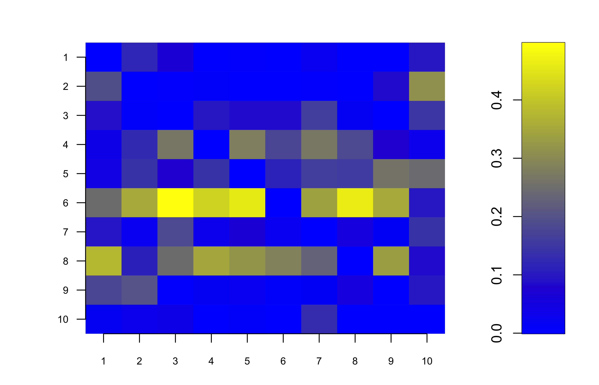
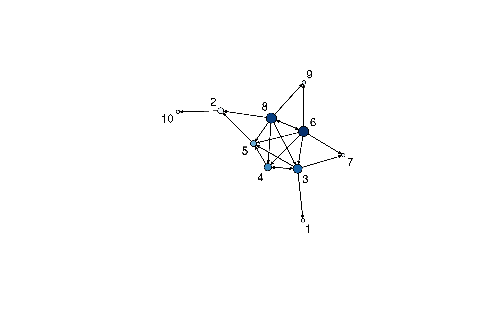

The goal of networkABC is to provide an inference tool based on approximate Bayesian computation to decipher network data and assess the strength of their inferred links.
This website and these examples were created by F. Bertrand and M. Maumy-Bertrand.
Installation
You can install the released version of networkABC from CRAN with:
install.packages("networkABC")You can install the development version of networkABC from github with:
devtools::install_github("fbertran/networkABC")Examples
The network_gen allows to simulate networks with given clustering coefficient.
set.seed(314)
library(networkABC)
resnet <- network_gen(10,1)
resnet
#> $number_genes
#> [1] 10
#>
#> $clust_coef
#> [1] 1
#>
#> $network
#> [,1] [,2] [,3] [,4] [,5] [,6] [,7] [,8] [,9] [,10]
#> [1,] 0 0 0 -1 1 1 0 0 -1 -1
#> [2,] 0 0 0 0 0 0 0 0 0 0
#> [3,] 0 0 0 0 0 0 0 0 0 0
#> [4,] 0 0 0 0 0 0 0 0 0 0
#> [5,] 0 0 0 0 0 0 0 0 0 0
#> [6,] 0 0 0 0 0 0 -1 0 0 1
#> [7,] 0 0 0 0 0 0 0 0 0 0
#> [8,] 1 0 -1 0 0 0 0 0 0 0
#> [9,] 0 0 0 1 0 0 0 0 0 0
#> [10,] 0 1 -1 0 0 0 0 0 0 0The abc function performs the network reverse engineering with Approximate Bayesian Computation.
set.seed(314)
M10<-matrix(rnorm(30),10,3)
result<-abc(data=M10)
#> First run of abc to find tolerance
#> ===============================
#> Iteration=1
#> Accepted:1000
#> Probabilities of clustering coefficients:
#> 0.334000 0.345000 0.321000
#> Tolerance value
#> 5%
#> 4.224594
#> ===============================
#> Beginning main run of abc
#> ===============================
#> Iteration=1
#> Accepted:69
#> Probabilities of clustering coefficients:
#> 0.362319 0.333333 0.304348
#> ===============================
#> Iteration=2
#> Accepted:98
#> Probabilities of clustering coefficients:
#> 0.377551 0.316327 0.306122
#> ===============================
#> Iteration=3
#> Accepted:113
#> Probabilities of clustering coefficients:
#> 0.495575 0.274336 0.230088
#> ===============================
#> Iteration=4
#> Accepted:168
#> Probabilities of clustering coefficients:
#> 0.613095 0.226190 0.160714
#> ===============================
#> Iteration=5
#> Accepted:130
#> Probabilities of clustering coefficients:
#> 0.700000 0.215385 0.084615
#> ===============================
#> Iteration=6
#> Accepted:174
#> Probabilities of clustering coefficients:
#> 0.712644 0.235632 0.051724
#> ===============================
#> Iteration=7
#> Accepted:145
#> Probabilities of clustering coefficients:
#> 0.737931 0.234483 0.027586
#> ===============================
#> Iteration=8
#> Accepted:134
#> Probabilities of clustering coefficients:
#> 0.798507 0.179104 0.022388
#> ===============================
#> Iteration=9
#> Accepted:143
#> Probabilities of clustering coefficients:
#> 0.825175 0.167832 0.006993
#> ===============================
#> Iteration=10
#> Accepted:189
#> Probabilities of clustering coefficients:
#> 0.851852 0.142857 0.005291The showHp function plots the hub probabilities.
showHp(result)
#> gene.hubs hubs.proba
#> 1 4 0.1640212
#> 2 6 0.2627866
#> 3 8 0.2310406The showNp function plots the neighbourhood probabilities.
showNp(result)
The showNetwork function plots the final network.
showNetwork(result,.2)